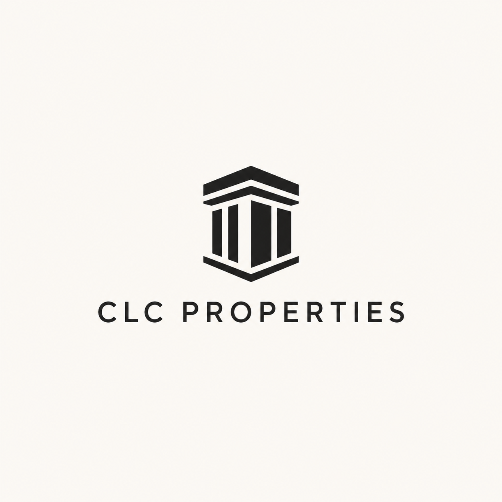

Architectural Mark
A more established building-inspired direction that leans into structure, trust, and property care.

Where It Comes From
This direction borrows from architectural columns, managed buildings, and institutional stability.
Why It Works
It gives CLC a more established property-management presence while still feeling connected to construction.
Watch-Out
It should stay warm and local, not too formal or government-like. The typography will matter a lot.
Talking Point
This is the stronger repositioning path: less cube, more architectural trust and managed-property confidence.
Comments
Saved in this browser only for now.